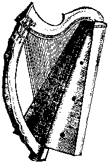
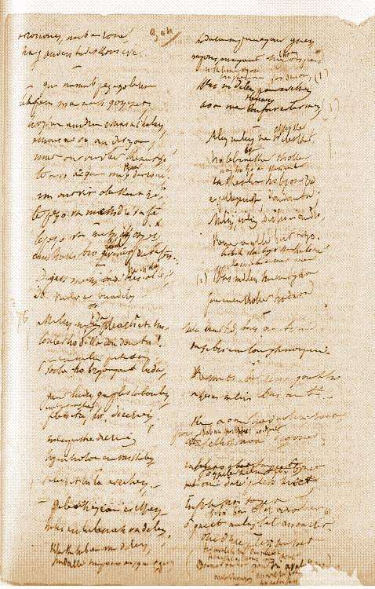

Kelc'h Marzhin Trede Rann
Marzhin Varzh
(1839: "Merlin-Barz")

I
Dornskrid "Merlin"

Dornskrid "Merlin"
Levrig pederyezheg
(brezhoneg, galleg, saozneg, alamaneg)
ar werz-mañ zo e gwerzh war al lec'hiennoù Amazon.
Klik amañ!:

1."Va mamm-gozh baour, em silaouet,
D'ar fest am eus c'hoant da
vonet
diskan
You, you, ou, you, you, ou!
You, you ou, you, ou!
2.D'ar fest, d'ar rederezh nevez
A zo lakaet
gant ar Roue
3.- D'ar rederezh na yefec'h ket
D'ar fest-mañ na da fest
ebet
4.Na yefec'h ket d'ar fest nevez
Gouelañ 'peus graet hed an
noz-me
5.Na yefec'h ket, mar dal gane
Gouelañ 'peus graet en ho huñvre
6.- Ma mammig paour, ma em c'haret,
D'ar fest em lezfec'h da vonet
7.- O vont d'ar fest c'hwi a gano
O tont en-dro c'hwi a ouelo"
II
8.E ebeul ruz en deus sternet
Gant direnn-flamm 'neus hen
houarnet
9.Ur c'habestr 'neus lakaet 'n e benn
Hag un dorchenn skañv
war e gein
10.E kerc'henn e c'houg ur walenn
Hag en-dro d'e lost ur
seizenn
11.Ha war e c'horre 'mañ pignet
Hag er fest nevez degouezhet
12.E park ar fest pa oa degoue'et
Oa ar gern-bual o vonet
13.Hag
an holl dud en ur bagad
Hag an holl virc'hed o lampat
14."An hini en
devo treuzet
Kleun bras park ar fest en ur red
15.En ul lamm klok,
distak, ha naet,
Merc'h ar Rou' en do da bried"
16.E ebeulig ruz, pa
glevas,
War-bouez e benn a c'hristilhas
17.Lammat a reas, ha kounnariñ,
Ha teurel c'hwezh tan gant e fri
18.Ha luc'hed gant e zaoulagad
Ha
darc'h en douar gant e droad
19.Ken a oa ar re all trec'het
Hag ar
c'hleun treuzet en ur red
20."Aotrou Roue, 'vel peus touet,
Ho merc'h
Linor renkan kaouet
21.- Ma merc'h Linor n'ho pezo ket
Na den eveldoc'h
kennebeut
22.N'eo ket kelc'herien a fell de
Da reiñ da bried d'am
merc'h-me"
23.Un ozac'h kozh a oa eno
Ha gantañ ur pikol varv
24.Ur varv en e chink, gwenn-kann,
Gwennoc'h evit gloan war al lann
25.Hag eñ gwisket gant ur sae c'hloan
Bordet penn-da-benn gant arc'hant
26.Hag eñ en tu dehou d'ar Roue
Outañ gourgomze, er pred oue
27.Ar
Roue pa'n deus e glevet
Dre deir gwech gant e vazh 'neus skoet
28.Teir
gwech gant e vazh war an daol
Ken a lakaas selaou an holl :
29."Mar
gasez din telenn Varzhin
(1839: "Merlin")
Dalc'het gant peder sug aour fin
30.Mar gasez
e delenn din-me
Zo staget e penn e wele
31.Mar he distagez, a-neuze
Ar pezo ma merc'h, marteze"
III
32."Ma mamm-gozh baour, ma em
c'haret,
Un ali din-me a refet
33.Ma mamm-gozh baour, ma em c'haret,
Rak ma c'halonig zo rannet
34.- Ma ho pije sentet ouzhin
Na vije
rannet ho kalon
35.Ma mabig paour, na ouelet ket,
An delenn a vo
distaget
36.Na ouelet ket, ma mabig paour,
Setu amañ ur morzhol aour
37.Kement tra ma zo na drousfe
Ma ve skoet gant ar morzhol-se"
IV
38."Eurvad ha joa 'barzh an ti-me
Setu me degoue'et adarre
39.Setu me deuet adarre
Ha telenn Varzhin
(1839: "Merlin")
ganin-me"
40.Mab ar Roue
dal m'e glevas
Ouzh e dad Roue c'hourgomzas
41.Ar Roue pa 'n deus e
glevet
D'an den yaouank en deus laret :
42."Mar gasez din-me e vizoù
A zo gantañ en e zorn dehou
43. Mar gasez e vizoù din-me
Te 'po ma
merc'h diganin-me"
44.Hag eñ da zont, o ouelañ druz,
Da gaout e
vamm-gozh diouzhtu
45."An Aotrou Roue 'n doa laret
Ha padal en deus
dislaret !
46.- Na chif ket evit kement-se
Tap ur skoultrig a zo aze
47.A zo aze 'barzh ma arc'hig
Hag ennañ daouzek deliennig
48.Hag
ennañ daouzek delienn grenn
Hag i ker kaer hag aour melen
49.Hag on bet
seizh noz da gerc'hat
Seizh vloaz tremenet, e seizh koad
50.Pa gano 'r
c'hog da hanter-noz
Ho marc'h ruz vo oc'h ho kortoz
51.'Peus ket da
gaout aon ebet
Merlin-Varzh na zihuno ket"
52.Pa gane 'r c'hog kreiz an
noz du
Lamme war an hent ar marc'h ruz
53.N'en doa ket ar c'hog
peurganet
Pa oa bizoù Marzhin
(1839: "Merlin")
lamet
V
54.Antronoz pa zarc'has
an deiz
Oa aet da gaout ar Roue
55.Hag ar Roue dal m'e welas
Chomas
war-sav, souezhet-bras
56.Souezhet, ha 'n holl eveltañ :
"Setu goune'et
e wreg gantañ !"
57.Hag eñ mont un tammig er-maez
E vab d'e heul hag
an o'ac'h kaezh
58.Hag i da zont gantañ en-dro
Unan a-gleiz, unan
a-zehou
59."Gwir eo, ma mab, pezh 't eus klevet :
Da c'hwreg hiriv az
peus goune'et
60.Hogen un dra c'hoazh a c'houlan
Hemañ a vo an
diwezhañ
61.Mar deus da ober kement-se
Vezi gwir vab-kaer ar roue
62.Hag az po ma merc'h hag ouzhpenn
An holl vro Leon, dre ma ouenn !
63.Degas Marzhin-Varzh
(1839: "Merlin-Barz")
tre em lez
Da veuliñ ar briadelezh"
VI
64."Marzhin-Varzh
(1839: "Merlin")
, a-beban e teuez
Toullet da zilhad treuz-didreuz ?
65.Da belec'h ez te evelhenn ?
Diskabel-kaer ha diarc'hen
66.Da
belec'h ez te evelhenn
Marzhin
(1839: "Merlin")
gozh, gant da vazh kelenn ?

(42.) "Mar gasez din-me e vizoù
A zo gantañ en e zorn dehou,
(43.) Mar teus da ober kement-se
Te pezo va merc'h, marteze."
(44.) "Ma mamm setu pe' z deus laret
An aotrou roue, gaouier touet.
Ar roue en-deus laret din
Moned da glask bizoù Melin.
Ar roue en-doa e gwir touet
Am befe e verc'h da fried. (d.w.)
P'an delin vije distaget.
Ar roue e-deus gwir touet
Hag en-deus he torret.
(45.) Ar roue en-doa ul le graet,
Ha padal en-deus hen torret!"
(46.) "Na chifit ket gant kement-se
Tap ur skoultrig a zo aze.
(47.) Tap ar skoultrig-se an dervenn
A zo ennañ tregont delienn,
(48.) A zo ennan tregont delienn,
Ken kaer eged aour melen.
(49.) Bet on bet seizh noz d'e glasked
E seizh koad () gwelet.
Kement den a zo kousket dous
(50.) Pa gano 'r c'hog da hanternoz
Da marc'hig vo dioude c'hortos.
Dioude c'hortoz war toul an nor
O c'hortoz an nor da zigor.
Da di Melin a vit kaset
Gant da marc'h bihan en ur réd.
Da di Melin a zo kousket
En e gwele hep soñj ebed.
(51.) Ne peus ket da gaout aoñ 'bed,
Melin Varzh ne zihuno ket.
Kemer a refes e vizoù
A zo gantañ en e zorn dehou.
(53.) Pa zeuas ar c'hog da kanañ,
Ar vizoù oa lammet gantañ,
(54.) Antronoz, pa darzhas an deiz
Oa aet da gavout ar roué.
(55.) Hag ar roue dal ma welaz
Chomaz 'n ur soñj sepantet-bras.
(56.) Hag an holl dud a oa ennañ:
"Setu goune'et e wreg gantañ!"
Hag ar rouanez a zeuaz
Ha ()az dre kichen he gwaz.
Ar rouanez, mab ar roue
Hag an den barvet kozh ivez.
(59.) - Gwir, ma mab, pezh a zo laret:
Te az-peus ma merc'h gounezet.
(60.) Hogen un dra c'hoazh a c'houlan.
Hemañ a vo an diwezhañ.
(61.) Mar out 'vit ober kement-se,
Te -pezo va merc'h, dre va feiz!
(62.) Te pezo va merc'h hag ouzhpen
An holl bro Gwened, dre va fenn!
(63) Degas Melin varzh 'kreiz al lez
Da veuliñ ar briadelezh".
(64.) Melin, Melin pelec'h it-hu
Toullet ho tilhad an daou tu?
Paour-kaez Melin, pelec'h it-hu
Saotret ho pragoù gant ludu?
(65.) Gant ludu, gant pl()aboulen
Pelec'h it-hu, 'ta, diarc'hen?
(66.) Evel ur paour-kaez dier maez
Hag en ho torn ur vazh kelenn?
Pelec'h it-hu 'ta evelhen?-
- Keler en tu bennag va zelenn.
Klasked tu bennag ma zelen
A dalve'e he fouez arc'hant gwenn (d.w.)
He fouez en arc'hant hag ouzhpen.
67.- Mont a
ran da glask ma zelenn
Frealz am c'halon er bed-mañ
68.Klask ma zelenn
ha ma bizoù
Pere am eus kollet o-daou
69.- Marzhin, Marzhin,
(1839: "Merlin")
na chifet
ket,
Ho telenn ned eo ket kollet
70.Ho telenn ned eo ket kollet
Nag
ho pizoù aour kennebeut
71.Deut tre en ti, deut tre, Marzhin
(1839: "Merlin")
,
Da zebriñ
un tamm boued ganin
72.- Mont gant ma hent na zalein
Na tamm boued ebet
na zebrin
73.Na zebrin tamm boued war ar bed
Ken n'am bo ma zelenn
kavet
74.- Marzhin! Marzhin!
(1839: "Merlin")
ouzhin sentet
Ho telenn a vezo kavet"
75.Kement ma bet pedet ganti
Kement emañ deut tre en ti
76.Ken a
zegouezhas, d'abardaez,
Mabig ar c'hwrac'h gozh ; hag eñ tre
77.Hag eñ
da zridal spontet-bras
En-dro d'an oaled pa sellas
78.O welet
Marzhin
(1839: "Merlin")
-Varzh kluchet
E benn war e galon stouet
79.Oc'h e welet war an
oaled
N'ouie doare pelec'h tec'het
80."Tevet, ma mab, na spontet ket,
Gant ar morgousk emañ dalc'het
81.Lonket en deus tri aval ruz
Am
eus poazhet dezhañ el ludu
82.Lonket en deus ma avaloù
Setu eñ d'hon
heul e pep bro"
VII
83.Ar rouanez a c'houlenne
Gant he
loufrenn, eus he gwele :
84."Petra c'hoari gant ar gêr-mañ ?
Pe safar a
glevan amañ ?
85.Pa'z on dihunet ken pred-se ;
Ken a gren postoù ma
gwele ?
86.Petra zo degoue'et barzh ar porzh
Gant an dud eno 'youal
forzh ?
87.- C'hoari gaer a zo er gêr-mañ
Gant Marzhin
(1839: "Merlin")
o tont en ti-mañ
88.Ur c'hwrac'hig kozh,
gwenn-kann, 'razan
Hag ho mab-kaer ivez gantañ"
89.Ar roue en deus hi c'hlevet
Hag eñ maez, ha prim da welet
90."Sav alese, embanner mat
Sav deus da wele, ha timat !
91.Ha kae
da gemenn dre ar vro
Dont d'an eured neb a garo
92.Dont da eured merc'h
ar roue
A vo dime'et a-benn eizhtez
93.Dont d'an eured, tudjentiled,
Kement a zo e Breizh hed-a-hed
94.Tudjentiled ha barnerien
Tud a
iliz ha marc'heien
95.Ha da gentañ ar Gonted vaour
Ha tud pinvidik ha
tud paour
96.Kae buan ha skañv dre ar vro
Kannadour, ha deus skañv
en-dro"
VIII
97."Selaouet holl, holl selaouet
Ma oc'h eus
divskouarn da glevet !
98.Selaouet holl hag e klevet
Ar pezh a zo
gourc'hemennet
99.Dont da eured merc'h ar roue
Neb a garo, a-benn
eizhtez
100.Dont d'an eured, bras ha bihan
Kement a zo er c'hanton-mañ
101.Dont d'an eured, tudjentiled,
Kement a zo e Breizh hed-a-hed
102.Tudjentiled ha barnerien
Tud a iliz ha marc'heien
103.Ha da
gentañ ar Gonted-vaour
Ha re binvidik ha re baour
104. Ha re binvidik ha
re baour
Na vanko de'e argant na aour
105.Na vanko de'e kig na bara
Na gwin, na dour-vel da evañ
106.Na skabelloù da aze'añ
Na paotred
skañv d'o servijañ
107.Daou c'hant pemoc'h a vo la'et
Ha daou c'hant
penn-kole lardet
108.Daou c'hant inar, ha kant karv,
A gement koad a zo
er vro
109.Daou c'hant ejenn,
kant du, kant gwenn
Vo roet o c'hrec'hin
dre rann krenn
110.Kant sae a vo, hag a c'hloan gwenn,
Hag a vo roet
d'ar veleien
111.Ha karkanioù aour a vo kant
A vo roet d'ar varc'heien
goant
112.Mantilli glas vo leizh ur sal
Da reiñ d'ar merc'hed da vragal
113.Hag eizh kant bragez nevez-c'hraet
Da reiñ d'an dud paour da wisket
114.Ha kant soner war o zorchenn
O son noz-deiz, war an dachenn
115.Ha Marzhin-Varzh
(1839: "Merlin-Barz")
e-kreiz al lez
O veuliñ ar briedelezh
116.C'hoari a-walc'h a vo eno
Kement-all birviken na vo"
IX
117."Klevet, keginour, me ho ped
Hag an eured zo achuet ?
118.- An
eured a zo achuet
Hag an holl draoù a zo lipet
119.Pemzek devezh he deus
padet
Ha dudi a-walc'h a zo bet
120.Aet int kuit holl gant profoù mat
Gant skoaz ar rou' hag e gimiad
121.Hag e vab-kaer da vro Leon
Gant
e bried, drev e galon
122.Aet int holl kuit, ha laouen-naet
Nemet ar
roue ned eo ket
123.Marzhin
(1839: "Merlin")
c'hoazh ur wech zo kollet
N'ouzer doare
pelec'h 'mañ aet"
(67.) Klask va zelenn paour evel-hen
A oa ma komfort er bed-mañ. -
(68.) Klask ma zelenn ha ma bizaoù
Pere em-eus kollet o-daou.-
(69.) - Melin, Melin na ouelit ket:
Ho telenn n'eo ket kollet.
(70.) Na kennebeut ho pizoù ruz
Ur perlezennig d'an daou tu. -
(71) - Deuit tre-barzh an ti-ni
Da zebriñ un tamm ganeomp-ni!-
(75.) Kement oa bet pedet ganti,
A zeuas Melin 'barzh an ti.
(76.) Keit a oa Melin o tebriñ boued,
Paotr Rafellik a oa degouet.
(79.) Rafellik a oa bet souezhet.
Ne ouie doare pelec'h tec'hed.
(78.) O gweled Melin tal an oaled
Hag e benn gantañ stouet.
(77.) Hag oc'h he klevoud diroc'hed,
Ar paotrig a oa souezhet.
(80.) -Tavit, ma mab, na rit ket trouz
Kouezhet eo en ur c'housk dous.
(81.) Boemet oa bet gant tri avalig ruz
Ha bremañ, ma dalv gant ar roue,
Te vezo 'vit gwir, mab d'ar roue!
(83.) Mevel ar palez lavare
D'ar rouanez ar mitin-se;
Ar rouanez a lavare
D'he plac'h a gambr an deiz-se:
(84.) - Petra c'hoari gant tud ar ger
Pa zo kement trouz e Gemper?
(86.) Krenañ a ra an nor-porzh
Gant an dud eno o youc'hal forzh!-
(87.) N'eus netra nevez erruet,
Nemed Merlin a zo digouet.
Ha daou penn-kezeg zo gantañ
O sachañ e garrig amañ.
Ha daou penn-kezeg, sternet flamm:
Unan zo du, an all zo kann.
(88.) Unan zo d'ar paotr en-deus gouneet
Ho merc'hig-c'hwi da fried.
An hini-all a zo d'e vamm
Ur vaouezig kozh gwisket e kann.
(89.) Hag ar roue, dal! ma glevas,
Trumm eus e gwele a zailhaz,
Ha gant an diri ez eas
Ha da doull nor-porzh à lampaz.
- Yec'hed mad deoc'h, aotrou roue!
Setu me deuet adarre!
Me am-bo ho merc'h ar wech-mañ!
Chañs vat a heul chañs fall bepred
Vel delioù glaz, delioù sec'het,
Vel hogan ruz, spern du flastret.
Kemen tra 'deus e lezenn graet:
Amzer nevez a heul ar goañv
Hag ar goañv a heul an hañv.-
(90.) - Sav alese, () keler mat,
Ha kerzh da vale bro timat!
(91.) Ha kerzh da lared tro war dro
Penaos ur fest 'benn tri deiz vo;
Ha lared d'an holl dud ar vro
Dont d'an eured, neb a garo!
(94.) Tudjentiled ha bourc'hizien
Ha flec'h ivez ha konted ken,
(95.) Konted ivez ha bourc'hizien
Ha tud diwar-maez ha peorien,
(105.) Ha peorien ha tud pinvidik
Na fallo na vara, na kig.
(106.) Na kig, na dour-vel da evañ,
Na skabelloù da aze'añ
Na kant mevel d'o servijañ.
(107.) Triwec'h penn moc'h-gwez vo lazhet
Ha triwec'h oan 'vit an eured.
(108.) Triwec'h inar, triwec'h garv
En enor da mab an aotroù.
(109.) Triwec'h inar, nav zu, nav wenn
Vo roet o c'hoc'hen da bep un'n.
(100.) Larit d'an holl, bras ha bihan,
Heb dale 'bed da gemen-mañ.
(96.) 'R c'hemengader p'en-deus klevet,
D'ober e zro ema aet.
(97.) "Chelaouet holl ha chelaouet! (=selaouit)
Pez a zo bet gourc'hemenet:
(110.) Boud a zo kant zae gloan wenn
Evit reiñ d'ar veleien,
Evit reiñ d'an dud a iliz
Hag i dantelezet bet(eg) ar penn.
(111.) Karkanioù aour a zo hanterkant
Evit reiñ d'ar varc'herien goant.
(112.) Ha mantilli glas, leun ar gambr
Da reiñ d'ar c'hwazed da vragal,
(113.) Ha pemp kant bragoù nevez-graet
Da reiñ d'ar re paour da wisked.
Ha kement a jak lien wenn
Ha pegement mui a chupenn.
(99.) An eured a vo 'benn diryaou
Neb en-defo c'hoant a zeuo!
(116.) Stall awalc'h a vezo ennañ,
Vel 'neus bet biskoazh er bed-mañ
Deuit holl di, bihan ha bras,
Da lakat an alfe (alc'hwez) n'e lec'h.
Deuit holl di, maouez ha gour
Da lak an alfe toull an nour (nor)!
(119.) Pemzektez bennag doa badet
Ar festoù demeus an eured.
D'ar merc'her ha pe oan digouet
Kaer vije neuze da weled
Endro da Gemper, hed da hed,
An tier leun a tudjentiled
An tier, a dud karget,
Hag ar marchosioù a roñsed.
Hag holl tiri o krenañ
Gant an holl dud o tont trenhan;
Gweled ruioù parañ gant aour melen
Ha lukernañ an arc'hant gwenn
War dilhad ar varc'herien.
Ha mintelli gloan ruz ha glaz
Ha gante bep ur c'hleze noazh.
Lod gante karnioù n'o c'houzoug
Hag holl harnezioù war o chouk.
Karkanioù aouret, penn da benn
Vel 'ma glevet da varcherien.
Kement trouz gante, kreiz ar ger,
Kemend grene an holl tier,
Hag an daou menez dre Kemper.
(117.) - Chilaouit, Keginour, me ho ped,
Hag an eured zo achuet?
(118.) - An eured a zo achuet
Tri devezh zo flamm tremenet.
Echu ar fest hag an ebat,
Ha ne deus neb tra da lipad.
(121.) Aet eo Rafellik da Wened
Ha merc'h ar roue kerkent hag eñ.
Hag e vamm gozh kerkent hag eñ.
(122.) Aet int holl kuit en un strollad,
Ganto kimiad roue a galon vad.
Aet int rac'h kuit a galon vat,
Gant bennoz roue hag he kimiad.
Aet int, aet holl kuit ha laouen meurbed
Nemed ar roue ned eo ket.
(123.) Ar roue a zo gul gla c'haret:
Merlin a zo adarre kollet.
Tec'het c'hoazh ur wech en-deus graet.
N'ouier dare pelec'h eo aet.
-